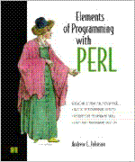

|  | Elements of Programming with Perl by Andrew Johnson Manning Press, 2000 ISBN 1-884777-80-5 $34.95 350 pages |
Writing for complete beginners is very hard. It requires complete comprehension of the topic, and without thorough planning can confuse rather than edify the intended audience.
Andrew Johnson's Elements of Programming with Perl is the best Perl book for neophytes that I've found. The author understands Perl well, and writes transparent prose for an audience unclear on what a program is or how it might be written. Several schools will be adopting this as the textbook for an Introductory Perl class, and it's not hard to see why.
The book spends a lot of time on the raw fundamentals of programming, the concepts and approaches that we old hands take for granted but are significant barriers for newcomers. Johnson's first chapter on the syntax of Perl discusses if blocks, variable naming, comments, and use strict in the context of a single program. His insistence that all beginners' programs be written with -w and use strict is admirable.
The next chapter talks about actually writing programs. As the reader watches a simple program move from idle fantasy to executing code, Johnson presents the software lifecycle in an easy-to-understand fashion. From there on, each chapter introduces more new language features and then exercises them.
It's easy to sing Johnson's praises. Here's a list of the shortcomings I found in the book: the sample program used in Chapter 2 has a dummy function which is unnecessary (Mark-Jason Dominus is fond of quoting Chekhov: If a cannon is hauled onto stage in Act 1, it had better be fired in Act 3. Johnson hauls out functions but doesn't give a meaningful example); the discussion of the software life cycle seems premature; and sometimes things are presented slightly out of order (for instance, he shows my used to declare and initialize multiple variables before he talks about lists. The explanation of lists is only three pages away, but it's still potentially confusing).
Johnson walks the reader through many of the developed programs using a form of literate programming. He writes an outline, then refines the outline into a program showing how each element of the outline is expanded into code or a more detailed outline. This demonstrates the process of stepwise refinement, and brings into the open something that would normally go on inside a programmer's mind. However, at times I felt the fundamentally simple nature of a problem was being lost behind a series of cascading intermediate steps.
To decide whether a novice really could learn from this, I asked a friend (Alvin Smith) who is computer-literate but not a Perl programmer whether he could learn Perl from it.
Johnson is utterly clear in his expositions. I picked this book up to give it a skim: instead, I was captured, page by following page, by Johnson's enthusiasm for his topic.
This book has something of the same scope as the multitude of "Introduction to Pascal" books that now litter the remainder bins, but in Johnson's book there is an energetic lucidity that will make any reviewer envious, and a direct honesty and fraternal directness that will delight students in any introductory course and make the individual reader leap to a keyboard with enthusiasm.
Make no bones about it, this book is good. Damn good. It will prepare a novice for a job as a journeyman programmer. How's this for praise: I'd hire a graduate of Elements of Programming with Perl whereas I'd actively avoid graduates of several other introductory Perl books. Well done, Andrew Johnson.
- Nathan Torkington, with Alvin Smith.
If you haven't yet read Johnson's Elements of Programming with Perl, read it now; if you have, read it again. This book speaks to Perl programmers and Perl would-be programmers at all levels of experience and expertise. The cover of the book suggests that the book is "a complete introduction to programming using Perl, written so it's accessible to those learning Perl as their first programming language."
I agree that Johnson has written a complete introduction to programming using Perl. Is it the long awaited ideal book for those learning Perl as a first language? For some, it meets that need admirably, but perhaps not for all. Elements is an extremely ambitious (and very successful) book that not only introduces programming and its concepts using Perl but that introduces an orderly software design philosophy. Within that framework, literate programming is both an organizing tool for the book and a source for examples in writing programs. The book accomplishes all of this in a little over 330 pages of main text (which is brief for Perl programming books).
Johnson's approach to programming is admirable. He uses an incremental development philosophy that focuses on design from the very beginning. The attitude that a quick one-liner, or perhaps a ten-liner, or maybe a hundred- or thousand-liner emerges naturally as your fingers flow across the keyboard is the antithesis of Johnson's approach. He advocates thinking about what you are trying to do first and then writing the code. It is this approach that makes the book worth reading and reading again. Even the cautious programmer benefits from the reminder that programming can be as much a science as an art. Johnson asserts that "Programming is about solving problems" rather than about telling a computer what to do.
Yet the book's strength in its systematic process and design is also a slight liability. As an introduction to programming in Perl as a first language, Elements gets off to a slow start. The first "complete" program is in Chapter 3, although "Hello, world" is shown in Chapter 1 and code snippets are scattered throughout the first two chapters. The impatient beginner who wants to get on with it may be very frustrated. This type of beginner would benefit from swallowing their impatience and working their way through those first few chapters. Once the beginning is well-launched, Elements moves quickly enough (though still very systematically) to satisfy even the impatient.
Special Perl variables ($_, $., and so on) are covered clearly in an unintimidating way in two or three pages as part of a series of short examples. This section should be an inspiration for other authors who would like to explain a potentially confusing subject to novices.
Elements covers the standard topics for an introductory text: files, text processing, regular expressions, lists, hashes, data structures, references - some of which are covered by other authors only in advanced sections. With the exception of the section on closures (and generators) - normally an advanced topic requiring careful reading - the material reads well either as an introduction or as a refresher course for a more experienced programmer.
Johnson also covers what he calls advanced topics: modules, algorithms, additional information on data structures, and object oriented programming. The fact is that Johnson's clarity masks the advanced nature of these topics. My only major criticism in this area is that he didn't do another 300 pages on these topics, but given the total length of the book, the coverage is necessarily abbreviated.
Most Perl books dispense with discussion of Perl documentation in a sentence or two of mothering statements. This book goes far beyond; Johnson discusses the Perl documentation and FAQ's in Chapter 1, then in Chapter 3 moves on to a program called faqgrep which uses Perl's text processing capability to search for and find relevant topics in the FAQ's. In Chapter 13, he extends the program to allow more sophisticated searches.
Literate programming is a style of mixing program source code, comments, and documentation in a single document so that it is oriented primarily toward readability. The program itself is extracted from the parent document by a program called a tangler. The whole approach of literate programming is championed by no less of an authority than Don Knuth. Andrew Johnson, though he does not belittle POD, is nevertheless a literate programming evangelist. He introduces the topic in Chapter 3 as a part of the development of the first program, and uses a simple form of literate programming throughout much of the book. In Chapter 9, he provides a somewhat more detailed discussion and gives an extended example of using literate programming as well as using Perl to develop a simple tangler program. This approach risked spending too much time on a peripheral subject, but the risk paid off handsomely. The literate programming material (whether you choose to use it in the future or not) is an excellent example and fits well with Johnson's design and programming philosophy. (As for me, I subscribe to Johnson's design philosophy. For literate programming, he didn't quite convert me, but I'm thinking about it.)
Selected source code, errata, and related material is available online at http://www.manning.com/Johnson. Typographical and minor errors dominate the errata list; the technical errors are carefully segregated and presented at the beginning of the list. In an ideal world, there would be no need for an errata list. Manning's posting of this online material list demonstrates an understanding of real world needs.
At the beginning of this review, I said you should read Johnson's book. This advice holds for the experienced programmer who needs an injection of sanity in a too-hectic world, as well as for all beginners. I must admit, however, that Johnson indicates that the book is less for those who already know how to program than for the true beginning programmer. For the novice who wants to learn Perl as a first language, the book should be an excellent choice, but I fear that many will be too impatient to read those first three or four chapters until they get to the programming. If they do, they will be well rewarded; what looks like a slow start is instead a solid grounding in technique and approach.
- Sam Hobbs
In Elements of Programming with Perl, Andrew Johnson recommends an article by Larry Wall on the natural language principles he applied to Perl. It's a fine article, and I wish Johnson himself had applied more of it in his book.
Wall says that Perl was designed to allow "baby talk", so that it isn't necessary to learn the whole language before starting to use it. This should lead to a teaching approach where the student starts right out to learn a few simple phrases, without worrying unduly about a larger context or theoretical framework or even the full range of available choices. O'Reilly's Learning Perl very much takes this approach, leading the reader immediately into "Hello, world" and building up to a simple interactive program within a few pages.
Elements takes a very different approach, in which the reader does not start coding until chapter 4, after learning the evolution of computer languages, the location of Perl in the design space of such languages (both compiled and interpreted, weakly typed, and optionally object oriented), the process of software development, the concept and notation of Literate Programming (LP), and the appropriate placement of statements and blocks on the page - and all this for readers who are presumed to be non-programmers.
This is like asking fourth graders to master Strunk and White's Elements of Style and Chomsky's Aspects of the Theory of Syntax before writing their first essay. It's difficult for me to picture someone learning programming this way.
Which is not to say the book is without value: on the contrary, although it falls well short of its goal, it is in many ways an excellent book with valid uses.
In particular, I think this would be a fine first book on Perl for students with some programming background. Several chapters are outstanding, such as chapters 4 through 8, which introduce many of the basics of Perl. Johnson has a gift for notations and diagrams, and his depictions of variables, references, and scope are unusually clear and enlightening.
Chapter 9 unfortunately presents an elaborate program to "tangle" a literate program into an executable one. The presentation itself is plenty tangled, and does little to persuade me of the teaching value of LP.
Subsequent chapters are back on track. Again, Johnson finds an excellent notation, this time to explain regular expressions. And I am particularly grateful for the sections on modules and debugging, topics often overlooked in books for beginners.
As a text for an introductory Perl class, re-ordered (start with chapter 4) and supplemented with some Perl "baby talk" exercises, I think this book would be first-rate.
As an introduction to programming, I don't think it succeeds. It needs to be more natural. Perl is fun, and fun is a wonderful learning tool. This book has little of the spirit of fun that pervades Randal Schwartz's Learning Perl and Larry Wall's writings, as well as Perl itself. That's it's loss, and ours.
- Ken Bandes
_ _END_ _